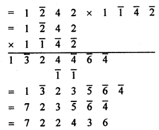

Vedic Maths: Vedic Maths book was written by Swami Bharati Krishna Tirtha, who was an Indian monk. It was first published in 1965. Veda is basically a Sanskrit word, which means Knowledge. It has a list of mental calculation techniques which are said to be present in the Vedas. This book is actually mentioned as Vedic Mathematics. This has been criticized by academics, who have also opposed its formation in the Indian school curriculum.
Vedic Maths Tricks
This Mathematics is a collection of Techniques/Sutras to solve arithmetical problems in an easy and faster way. It consists of 16 Sutras and 13 sub-sutras which can be used for questions involved in arithmetic, algebra, geometry, calculus, conic. The sutras are basically the formulas which we use in the mathematical calculation.
Vedic Maths book was previously included in the syllabus of Madhya Pradesh and Uttar Pradesh Board affiliated Schools. Some of the schools and organizations run by Hindu nationalist groups, also have included methods in their syllabus, even those groups which are outside India. The Hindu nationalists also tried to include these curricula in the NCERT books.
In earlier classes, we studied that during the period of dwelling in Sringeri Matha, Mysore Swami Bharati Krishna Tirtha did an arduous ascetic fervor for eight years. In the highest position of accomplishment, he got the perceptive vision of mathematics formulae mentioned in Vedas, the holiest scriptures and expressed his spiritual feelings in the form of Mantras (formulae).
These mantras were named Vedic Mathematical Formulae, which is exactly true. According to the scholars of Vedas, the knowledge of Vedas is beyond human power. The knowledge of Vedas cannot be obtained only by thinking or learning. It is an accomplish-feeling and expression it in the form of Mantras. In this perspective, the formulae formed by Swamiji are Vedic Mathematics Mantras.
Importance of Vedic Mathematics
To get a proper solution of any mathematical problems when a regular and inure practice of Vedic mathematical formulae is made, the concentration and memory is developed also a fierceness is seemed in his thinking and meditation. Due to freshness, simplicity and agreeability of Vedic mathematics create a feeling of inquisitiveness in the human heart.
The inquisitiveness makes him alert and aware and steps by step his inner soul begin to be vigilant. In fact, Vedic mathematics is a science of making someones inner should awake. This awareness of inner soul becomes the basis of the development of the human mind and his personality.
Important Definitions Related to Vedic Mathematics
- Preceding Number (Purvena): The previous number is called the preceding number e.g., in 785, the Previous number of 5 is 8.
- Param Mitra Number or Complementary Number: Two numbers having the sum of 10 are called Param Mitra number or complementary numbers.
e.g.,Param Mitra number of 2 = 8
Param Mitra number of 5 = 5
Param Mitra number of 9 = 1 - Disjunctor Number: The number which is subtracted from other numbers.
- Detachable Number: The number from which a number is subtracted.
- Formula Ekadhikena Purvene: To obtain the next number to a given number.
A dot (.) is put on the given digit or number of ekadhik to show this sutra e.g., ekadhik of 15 = 15 + 1 = 16
Ekadhik of digit 5 in 2536 = 2636. - Nikhilum Digit: Except unit digit, all the digits are called Nikhilam digit e.g., in 963, 9, 6 are Nikhilam digit.
- Charam Digit: Unit digit of a number is called charam digit e,g., 3 is charam digit in 963.
- Vinculum number (negative digits): The digit having bar above on it is called vinculum number. e.g., -5 = \(\bar { 5 }\).
- Base: 10, 100, 1000, etc. are called base. These are multiple of 10.
- Sub-base: Sub-base is the multiplier of base mostly it is a digit ends with zero, e.g., In 10 × 8, 10 is based and 8 is sub-base.
- Deviation: When base or sub-base is subtracted from the given number the difference is called deviation.
Deviation = Number – Base (or sub-base)
If number > base/sub-base, then deviation will be +ve
If number < base/sub-base, then deviation will be -ve.
A deviation has as many digits as the number of zeros in the base. - Param Digit: Digit 9 is called Param digit or Brahm digit.
- Whole Number: Ten is called the whole number.
Main Operations: Practice and Extension
Addition: In our previous class, we learned and practiced the addition of real numbers with the help of Sutra Ekadhikena Poorvena. In the practice, problems related to perfect numbers (i.e., Measurement units km-m) were solved. In fact, using the Sutra Ekadhikena Purvena all the problems of addition can be solved, measurement unit, money (rupees and paisa), weight (kilogram-gram) capacitance (liter-milliliter), time (hours, minutes, seconds), decimal fractions real numbers, distance (km, m, cm), etc.
Step 1: Informing column, according to the unit of measurement there is certain numbers in unit column. For example one rupee = 100 paise, so there will be two unit columns. 5 paisa will be written as paisa 05. Similarly, 1 kilometer = 1000 meters, so there will be three unit columns in problem and 84 meters will be written as 084 meters, so there will be three unit columns in problem and 84 meters will be written as 084 meters.
Step 2: Having completed forming the column, operation of addition is finished with the help of formula.
Step 3: When the sums are related to time whose unit is an hour, minute and second, the base in the first column (10) and in second 6 should be taken. In the column of an hour the base is always 10.
Example 1.
Hints:
(i) 65 gram and 85 grams will be written as 065 grams ans 085 grams.
(ii) Start adding from the top of unit column.
(iii) 5 + 5 = 10, so mark the more than, sign above 8, it comes before 5, remainder = 10 – 10 = 0
(iv) Write 0 + 2 + 5 = 7 at the place of answer.
(v) Keep it up.
Addition Orally (Sutra Ekadikena Poorvena + Soonyant Sankhya)
After some regular practice of above sutra, sums with large numbers can be solved rapidly or orally. Use of a round figure is a special method of ancient Indian Mathematics which is easier and very affected in the operation of addition. In the method, two digits at one and tens place are added in a special manner. Three digits at one’s tens and hundreds can also be added accordingly.
Method: Make one number of two in a round figure maintain its deficiency in the second given number. Add obtained new numbers. If die obtained sum result is more than 100, put an ekadhikena mark above it. Add the remainder into next number. At last, write final remainder as an answer. Revise this operation for the next columns. Look at the example given below:
Example 1.
Add 35 and 58.
Solution:
Convert these 58 into a round figure we need 2.
This deficiency will maintain in 35.
So 35 + 58 = 33 + (2 + 58) = 33 + 60 = 93
Example 2.
Add 19 and 65.
Solution:
19 + 65 = (19 + 1) + 64 = 20 + 64 = 84
Note: Similarly, many numbers can be added.
Example 3.
Add.
Hints:
(i) 98 + 89 = 98 + 2 + 87 = 100 + 87 = 187
On the digit 7 before 89 more than one mark.
(ii) Remainder 87 + 15 = 87 + 3 + 12 = 90 + 12 = 102
On the digit 7 before 15, more than mark.
(iii) Remainder 02 + 37 + 39 and 39 + 76 = 35 + 4 + 76 = 35 + 80 = 15 + 20 + 80 = 115
above the digit 9 before 76 more than one mark and 15 is put at the place of answer.
(iv) Now complete the operation as given above.
Example 4.
Add
Hints
(i) 34 + 59 = 33 + 1 + 59 = 33 + 60 = 93
(ii) Remainder 93 + 32 = 93 + 7 + 25 = 100 + 25 = 125.
So more than one mark on digit 9 in third column.
(iii) Remainder 25 + 47 = 22 + 3 + 47 = 22 + 50 = 72
(iv) Remaining operation given above.
Subtraction:
In the previous class, we used two Vedic methods to solve the subtractions.
1. The method based on the Sutra Ekadhikena Poorvena Mitra Ank.
2. The method based on the Sutra Ekanyunen Poorvena Param Mitram,
Every problem of subtraction of measure unit of the real number can be solved with the help of the first method.
So, we consider again on this method. We know that two digits of a number are Param Mitra (close friend) to each other if their sum is equal to or more than ten.
The number from which a number is subtracted is called detachable number and the number which is subtracted is called disjunctor. The method can be cleared in an easy way with the help of examples given below.
Example 1.
Subtract by Vedic Method.
Hint
(i) 3 cannot be subtracted from 0, so add 7 the Param Mitra Anka of 3, to 0. Write the sum below at the answer place and mark more than one sign on previous digit 6.
(ii) 6 = 7 cannot be subtracted from 0, so add the digit 3, the Param Mitra and of 7 into 0. Write it at the answer place and mark the sign of more than one on previous digit 2.
(iii) Write 8 – \(\dot { 2 }\) = 5, at the answer place, So the remainder = 537.
Example 2.
Subtract the following by Vedic Method:
Hints:
(i) Measurement unit in time column-wise base is different.
(ii) In the column of minute and second there will be two bases.
(a) Base in the unit column of both = 10
(b) Base in tens column of both = 6
(iii) Base in the column of hour = 10
(iv) The base of getting complement digits in the tens column of minute and second = 6 and in remaining base 10.
Hence, the answer is 25H 57min. 45sec.
Example 3.
Subtract by Vedic Method:
Hints:
(i) Arrange the column numbers in meter and centimeter.
(ii) Centimeter column: 6 cannot be subtracted from 5, thus add 4 the Param Mitra Ank of 6 to 5.
(iii) Write the sum = 9 at the answer place and mark more than one sign on 4 the pre dissociator digit.
(iv) \(\dot { 4 }\) = 5 cannot be subtracted from 3, so add 5 the param Mitra and to 3, the pre-dissociator digit.
(v) Write sum = 8 below and mark the sign of more than one on the pre-dissociator 5.
(vi) Write 7 – \(\dot { 5 }\) = 1 below
(vii) 7 cannot be subtracted from 6, so adding 6 + 3 = 9 below and mark the sign of more than one the pre-disjunctor 3.
(viii) Write 4 – \(\dot { 3 }\) = 0 below.
(ix) All the next operations will be done in the same way.
Remainder = 9 km 91 m 89 cm.
Multiplication:
In the previous class, we studied four methods of multiplication operations based on the Vedic Sutras. We should have the perfect practice of these sutras so that we might be able to choose a proper sutra for a proper solution of any type of problem-related to multiplication at once. Look at the example given below.
Example 1.
Multiply the following :
686 × 614 (Sutra Ekadhikena purvena)
Solution:
686 × 614
sum = 100 = 6 × 7 / 86 × 14 = 42 / 1204 = 421204
Hints:
(i) Sum of lost’digit = 86 + 14 = 100
(ii) Remaining nikhilam digits are mutually equal = 5
(iii) Four digits in right side = 1204.
Hence, 686 × 614 = 421204.
Example 2.
Choose the best Sutra to get an easy and rapid solution of588 × 512.
Solution (i):
May the Sutra Ekadhikena Poorvena be the best formula for solving it?
The sum of the digits at the place of ones and tens = 88 + 12 = 100 and two Nikhilam digits are 5 each. So the Sutra of effective here.
According to the Sutra
588 × 512 = 5 × 6 / 88 × 12 (Four digits in RHS)
= 301056
Solution (ii): Justification of the Sutra Nikhilam Upadhara
Hints:
(i) Base = 100
(ii) Sub-base = 100 × 5
(iii) Sub-base digit = 5
(iv) Differences = +88 and +12
(v) Two digits in RHS and the Sutra is effective
Solution (iii): The Sutra Ekanayunena Purvena cannot be applied for finding the solution of 588 × 512, as there is not a digit of 9 in both numbers.
Solution (iv): 588 × 512 can be solved by the Sutra Urdhava-tiryagbhyam
There are three columns in the problem. So five groups will be formed i.e., having obtained five products, they will be written in a special manner and then added.
Result 1. Observing the first, second and fourth solutions it is certain that 588 × 512 = 301056.
2. In the first solution, we get the result easier, therefore Sutra Ekadhikena Poorvena is the best.
Example 3.
Which of the Sutra is the best to solve 842 × 858?
Solution:
(i) In this problem the Sutra Ekadhikena Poorvena is not effective as the product of RHS i.e., 42 × 58 cannot be obtained easily.
(ii) The Sutra Nikhilam Adhara cannot be effective here as if the base 1000 is considered, then the difference respectively will be -158 and -142. The Sutra Nikhilam-Upadhara is not effective here as Upadhar (Sub-base) = 800, we get the difference 42 and 58 respectively.
(iii) The Sutra Ekanyunena Poorvena is not effective here.
(iv) The Sutra Urdhva-tiryagbhyam is effective and the best here. If the number is large, the calculation is difficult. So we can think over this new formula.
(v) The New option: To get the solution of 842 × 858, two Sutras are used respectively, first the Sutra Ekadhikena Poorvena and then the Sutra Urdhva-tiryagbhyam.
(v) Extension of the Operation of Multiplication (Sutra Urdhvatiryagbhyam + Viloknam)
Using the formulae Urdhva-tiryagbhyam and vinculum, the product of two larger number can be obtained id easily. Using the vinculum siitra first of all. The digits more than 5 are converted into smaller digits i.e., (0, 1, 2, 3, 4, 5) after that the product is calculated with the Sutra Urdhva-tiryagbhyam and at last obtained product, including negative sign is again turned into dying normal digits. this method can be cleared by observing the examples given below.
Example 1.
Solve 842 × 858

Hints
(i) Convert greater digits into smaller ones.
(ii) Multiple by Urdhva-tiryagbhyam Sutra.
(iii) Turn the obtained negative signs of the product in the normal digits by the method of Nikhilam.
Example 2.
Find the value of 966 × 973.
Note: Using the Sutra Urdhva-tiryagbhyam, we should try to get the product of large number orally and express it into one line.
Division:
In the previous class, the following three methods were used for division in detail:
(a) Sutra Nikhilam
The Nikhilam Sutra based method is effective only when the digits of divisor are greater than 5 and the complementary number of division to the respect of the base 10 or the power of 10 is known. In this method, the main operation is performed by the complementary number.
(b) Sutra Paravartya Yojayet
Sutra Paravartya Yojayet will be effective only when the digits of divisor are smaller than 5 or can be put also the digit from the left-hand side is 1 or can be brought and the base = 10, or the difference of the divisor comparably the power of 10 (not sub-base). Only this method out of three can be used for the division in algebra.
(c) Sutra Urdhva-Tiryabhyam
By the method of dhvanjank based on the Urdhva-tiryagbhyam, every type of problem-related to division can be solved. In this method, it is most important to choose the Mukhyank and dhvajank properly. The dhvanjank may have so many digits as you wish. There may be more than one digits in Mukhyank. As many digits must be put in the dividend at the place of ones in die third section as there are in the dhvajank and remaining in the middle section. We shall clear the method with the help of the following examples:
Example 1.
Solve by the dhvajank method
989765 ÷ 87
Hints:
(i) Divisior = 87, Mukhyank = 8 and dhvajank = 7
(ii) In third column one digit of dividend = 5.
(iii) 9 ÷ 8, first digit of quotient = 1 and remainder = 1.
(iv) New dividend = 18, the corrected dividend.
(v) 11 ÷ 8, second digit of quotient = 1, remainder = 3.
(vi) New dividend = 37, the corrected dividend.
(vii) 30 ÷ 8, third digit of quotient = 3, remainder = 6.
(viii) New dividend = 66, the corrected dividend.
(ix) 45 ÷ 8, forth digit of quotient = 5, remainder = 5.
(x) New dividend = 55, the corrected dividend or the final remainder
Quotient = 1135, remainder = 20
Example 2.
Solve: 13579 ÷ 975 (dhvajank method)
Solution: 13579 ÷ 975
Hint:
(i) 13 ÷ 9, first digit of quotient = 1, remainder = 4.
(ii) New dividend = 45,corrected dividend = 45 – 1 × 7 = 38
(iii) 38 ÷ 9, second digit of quotient = 4, remainder = 2.
(iv) New dividend = 27
Corrected dividend = 27 – (4 × 7 + 1 × 5) = 27 – 33 = -6
Since, we get the corrected dividend is negative so the second digit of quotient must be 3 instead of 4.
This is why the terms (iii) and (iv) are rejectable.
(v) Again 38 ÷ 9, the second digit of quotient = 3, remainder = 11
(vi) New dividend = 1179. So the corrected dividend or the final dividend or final remainder.
= 1179 – (3 × 7 + 1 × 5) × 10 – 3 × 5 = 1179 – 260 – 15 = 904
Hence, the quotient = 13 and remainder = 904
Example 3.
21015 ÷ 879 (dhvanjank method)
Solution:
Divisor = 897, Mukhyank = 8 and dhvanjank = 79.
Since there are larger digits in the dhvanjank, so the divisor 879 will be converted into smaller digits comparatively by Nikhilam (Vinculum) Method
Hints:
(i) 21 ÷ 9, first digit of quotient = 2, remainder = 3.
(ii) New dividend = 309, corrected dividend = 30 – 2 × \(\bar { 2 }\) = 34
(iii) 34 ÷ 9, second digit of quotient = 3, remainder = 7.
(iv) New dividend = 715, corrected dividend or final remainder
= 715 – (3 × \(\bar { 2 }\) + 2 × \(\bar { 1 }\))10 – 3 × \(\bar { 1 }\)
= 715 + 80 + 3 = 798
Hence, quotient = 23, remainder = 798.
Example 4.
7453 ÷ 79 (dhwanjank method)
Hints:
(i) Divisor 79 = 8 \(\bar { 1 }\), mukhyank = 8, dhvanjank = \(\bar { 1 }\)
(ii) 74 ÷ 8, first digit of quotient = 9, remainder = 2
(iii) New dividend = 25, corrected dividend = 25 + 9 = 34
(iv) 34 ÷ 8, second digit of quotient = 4, remainder = 2.
(v) New dividend or final remainder = 23 + 4 = 27.
Hence quotient = 94, remainder = 27
Note:
1. See the construct (iii)
New dividend = 25, corrected dividend = 25 – \(\bar { 9 }\) × 1 = 25 + 9 = 34.
New dividend + pre digit of the quotient.
2. If 9 is at the place of ones in the divisor, then the corrected dividend = New dividend = pre quotient digit may be taken.
3. In the problem in the which the one’s place unit, of divisor, is 1, the corrected dividend = new dividend + the digit of pre quotient is taken.
4. There is no need to write the hints for the two types of above problems.
Example 5.
Solve 43758972 ÷ 81 (dhvajank method)
Solution:
43758972 ÷ 81
Addition and Subtraction Vedic Maths Tricks
Vedic Maths Advantages and Uses
Once the student understands the system of mental mathematics, they will become more creative and start thinking logically. This maths is very flexible for them. The students can easily play with numbers with the help of this system.
Regular mathematical methods are sometimes complex and time-consuming. But if use Vedic Mathematic’s Procedure and Techniques, some of the calculations such as, sets of given data,  can be done very fast. Some of the more useful advantages of this Mathematics are;
- Its more than 1700% times faster than General Math. Thus, it could be considered as the World’s Fastest.
It helps a child to lose the Math fear from his mind. Usually, students are scared of doing mathematical calculation because of the logic they have to use to solve it. Thus, this ancient Maths will help to solve the problems in the easiest way.
It helps to increase the thinking capability and intelligence, along with a sharpening of the mind. - Helps in increasing the speed and giving accurate answers.
- Students feel very confident about this subject, after improving their memory power.
- Students get interested more in numbers, they just have to apply their skills and have knowledge of tables to learn this.
- These maths calculation are of great use while preparing for competitive exams.
Vedic Maths Sutras
As mentioned before, it consists of 16 sutras. Below are the names of the Sutras and Upa sutras with their meaning and corollary.
| Name | Upa Sutra | Meaning | Corollary |
| Ekadhikena Purvena | Anurupyena | By one more than the previous one | Proportionately |
| Nikhilam Navatashcaramam Dashatah | Sisyate Sesasamjnah | All from 9 and the last from 10 | The Remainder Remains Constant |
| Urdhva-Tiryagbyham | Adyamadyenantyamantyena | Vertically and crosswise | First by the First and the Last by the Last |
| Paraavartya Yojayet | Kevalaih Saptakam Gunyat | Transpose and adjust | For 7 the Multiplicand is 143 |
| Shunyam Saamyasamuccaye | Vestanam | When the sum is the same that sum is zero | By Osculation |
| Anurupye Shunyamanyat | Yavadunam Tavadunam | If one is in ratio, the other is zero | Lessen by the Deficiency |
| Sankalana-vyavakalanabhyam | Yavadunam Tavadunikritya Varga Yojayet | By addition and by subtraction | Whatever the Deficiency lessen by that amount and set up the Square of the Deficiency |
| Puranapuranabyham | Antyayordashake’pi | By the completion or non-completion | Last Totalling 10 |
| Chalana-Kalanabyham | Antyayoreva | Differences and Similarities | Only the Last Terms |
| Yaavadunam | Samuccayagunitah | Whatever the extent of its deficiency | The Sum of the Products |
| Vyashtisamanstih | Lopanasthapanabhyam | Part and Whole | By Alternate Elimination and Retention |
| Shesanyankena Charamena | Vilokanam | The remainders by the last digit | By Mere Observation |
| Sopaantyadvayamantyam | Gunitasamuccayah Samuccayagunitah | The ultimate and twice the penultimate | The Product of the Sum is the Sum of the Products |
| Ekanyunena Purvena | Dhvajanka | By one less than the previous one. | On the Flag |
| Gunitasamuchyah | Dwandwa Yogiji | The product of the sum is equal to the sum of the product. | – |
| Gunakasamuchyah | Adyam Antyam Madhyam | The factors of the sum are equal to the sum of the factors | – |
We hope the detailed article on Vedic Maths is helpful. If you have any doubt regarding this article or Vedic Maths, drop your comments in the comment section below and we will get back to you as soon as possible.
FAQs on Vedic Maths
1. What is Vedic Mathematics?
Vedic Maths is the world’s fastest mental maths system. It helps you calculate faster.
2. How useful is Vedic Maths?
Vedic Maths improves mentality and promotes creativity. The ease and simplicity of Vedic Mathematics mean that calculations can be carried out mentally. All these features of Vedic math encourage students to be creative in doing their math.
3. What are the best ways to learn Vedic Maths?
Learn about the Vedic Maths Tricks, Primary Definitions, and the importance of it using the direct links available on our page. You can view or download and use them as a reference during your preparation.
4. Which are good books to learn Vedic Mathematics?
Aspirants can look for some of the best books to learn on Vedic Mathematics by accessing our page.